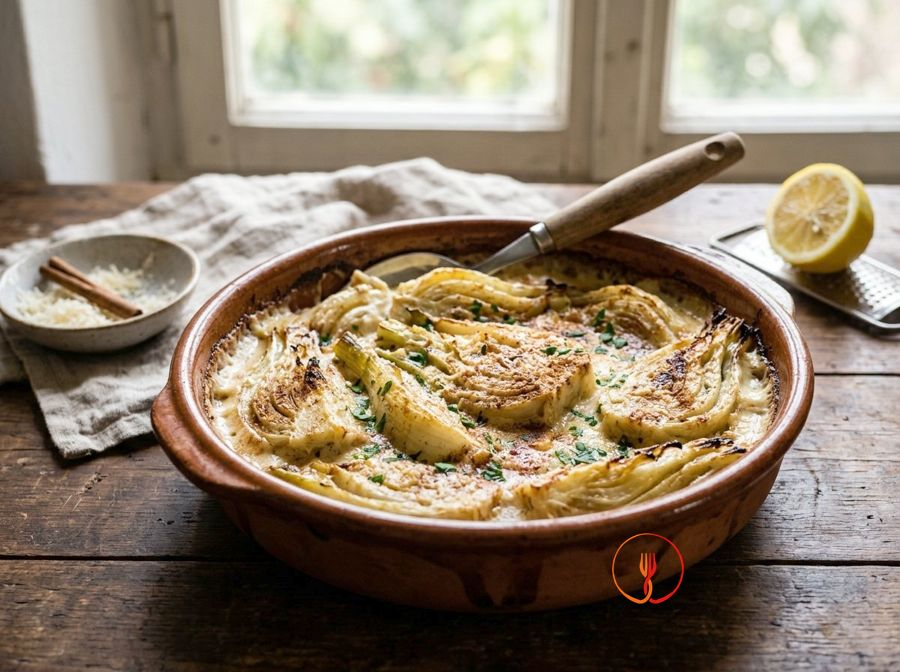

Cinnamon Gratinéed Fennel
A cozy side dish that becomes intriguing with the addition of spices
Ingredients
- Milk500 g
- All-purpose flour (00 flour)30 g
- Fennel bulbs4 pcs
- ground cinnamonto taste
- Lemon1 pc
- Grated Grana Padano PDO100 g
- Butter40 g
- Orange1 pc
- fine saltto taste
Allergens
Gluten, Milk, Eggs
May contain traces of: Celery.
Method
- Warm the milk, flavored with a tip of a teaspoon of cinnamon and a pinch of salt.
- Melt the butter separately and mix in the flour, whisking it away from the heat.
- Combine the mixture with the flavored milk and cook for 5 minutes, stirring continuously.
- Clean the fennel and cut them into half-centimeter thick slices.
- Blanch them in boiling salted water acidified with the juice of half a lemon for about 10 minutes.
- Drain and cool them.
- Butter a baking dish, spread a few spoonfuls of béchamel, then make a first layer of fennel slices.
- Sprinkle them with the béchamel and the grated cheese. Continue layering until the fennel is finished, ending with béchamel and grated Grana.
- Bake at 200 degrees Celsius on grill mode for 12-15 minutes.
- Garnish with a bit of grated orange zest and serve.
Nutrition facts (estimate)
| Per serving (375 g) | Per 100 g | |
|---|---|---|
| Energy | 1531 kJ / 366 kcal | 410 kJ / 98 kcal |
| Protein | 16 g | 4.3 g |
| Carbohydrates | 24 g | 6.4 g |
| of which sugars | 11 g | 2.8 g |
| Fat | 20 g | 5.3 g |
| of which saturates | 12 g | 3.3 g |
| Fibre | 7.8 g | 2.1 g |
| Salt | 1.4 g | 0.4 g |
AI estimates based on average CREA / USDA data: indicative only, not a substitute for medical or dietitian advice.
Open the recipe in the app for the shopping list, ingredient sheets and nearby shops.